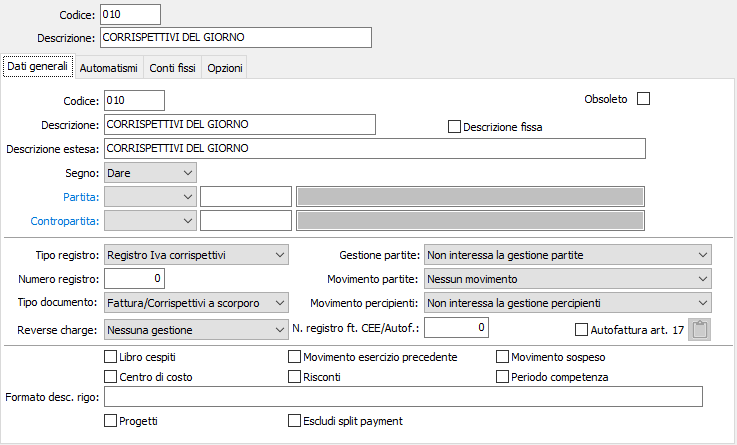
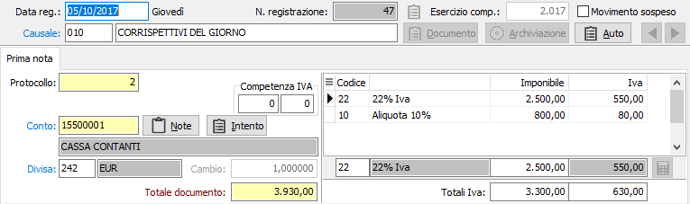
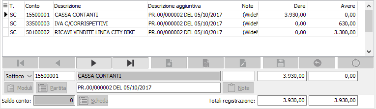

Registrazione di corrispettivi a scorporo
La registrazione dei corrispettivi a scorporo, governata da apposita causale che non prevede la gestione delle partite, propone il codice del conto cassa ed il codice del conto di ricavo previsto dalla causale, entrambi modificabili.

È richiesta altresì la presenza, nella configurazione codici fissi, del codice del sottoconto Cassa che viene utilizzato per default durante la compilazione della sezione contabilità.
Si ricorda inoltre che in Tabella Configurazione Contabilità deve essere attiva la spunta nel check-box Corrispettivi a scorporo.
Dopo aver impostato la causale, il programma propone il codice del sottoconto cassa, proposto dalla tabella Codici fissi, come conto di imputazione e il cursore si posiziona sul campo Totale documento. Conoscendo il totale generale dell'incasso del giorno è possibile impostare tale valore. In caso contrario, è possibile lasciare il campo non valorizzato.

Impostare quindi il codice dell'aliquota Iva di competenza. Sul campo imponibile è possibile agire in due modi: conoscendo l'imponibile relativo all'aliquota indicata, impostarlo e proseguire: il programma calcolerà automaticamente l'Iva relativa: se invece non si conosce l'imponibile ma il totale incassato per l'aliquota indicata, impostare il totale lordo e premere il tasto F11: il programma effettuerà lo scorporo automaticamente.
È possibile naturalmente registrare altri importi dell'incasso giornaliero soggetti ad aliquote Iva diverse. Al termine, se in precedenza era stato impostato il totale dell'incasso giornaliero nel campo Totale documento, il programma passa automaticamente alla sezione video contabilità. In caso contrario l'operatore dovrà provvedere personalmente premendo pagina giù.

La sezione contabilità viene completata automaticamente se la causale contabile contiene 'indicazione del conto di ricavo da accreditare in Avere. In caso contrario, il cursore si posiziona sul terzo rigo, già completo dell'importo in Avere, affinché l'utente inserisca il codice del sottoconto da accreditare.